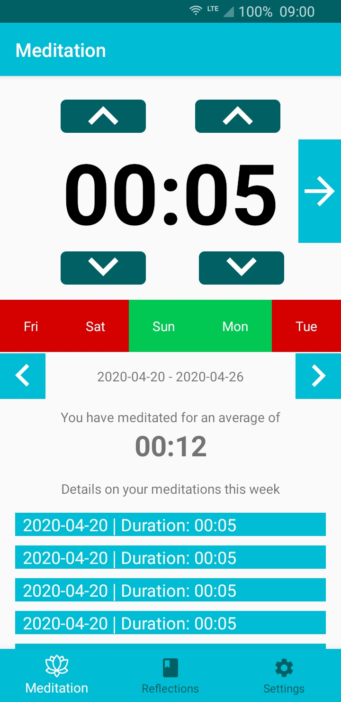
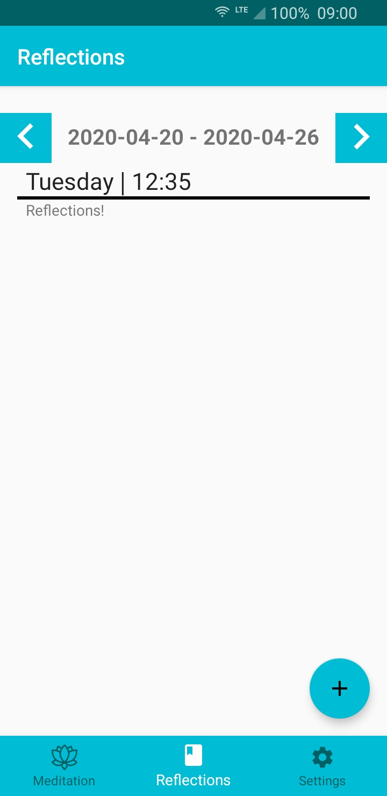
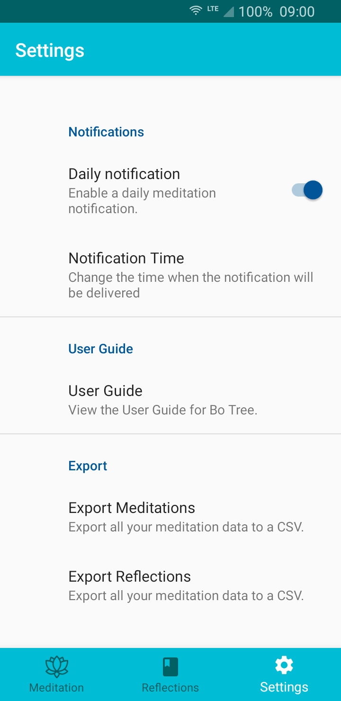
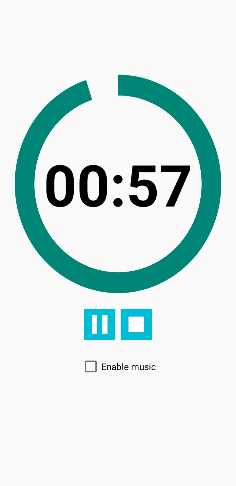
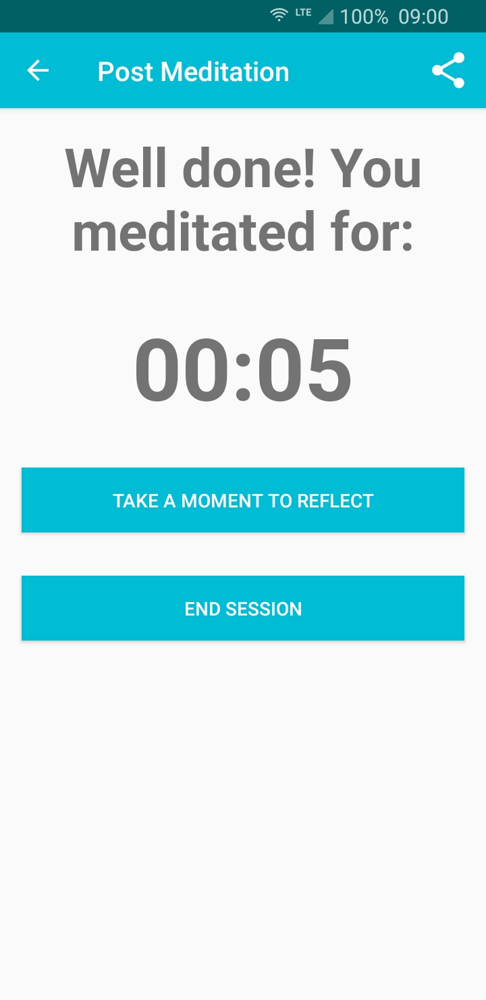
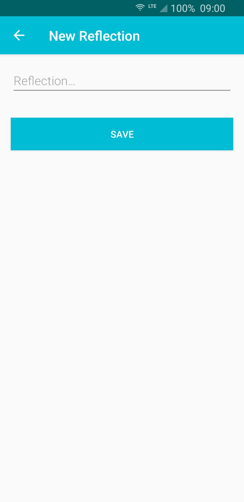

Welcome to Bo Tree! Bo Tree is a meditation and reflections app. It allows you to time your meditations, and to write some reflections following your experience. It can also remind you daily to perform your meditation, so you never forget.
Intro Screen
This is the intro screen for Bo Tree.

At a glance: the top section of the screen is the timer. You can configure it to be whatever time you want using the up and down arrows. The left arrows change the total minutes, indicated by it's presence near the minutes section of the
time. The right arrows change the total seconds in 5 second increments. Press on the arrow pointing to the right will start the timer.
The ticker displaying the days indicates whether you have meditated on said day. It gives you a short term view of how you're doing, so you can track progress, but not be too bogged down by negative past experiences.
Below the ticker, it shows a week-by-week overview of your meditations, including an average time meditated.
Reflections
This is where you can view your previous reflections.

In this screen, you can see the previous reflections, the content of them, and the time in which they were created. Press the left or right buttons at the top changes the currently displayed view, so you can view your meditations in the past (the exception being viewing into the future, as there's little point in this). You can also swipe left and right to do this.
Pressing on the floating action button (FAB) allows you to create new reflections: this can also be performed from the post meditation screen, which we'll describe later.
Settings
This is the settings screen, where you can configure aspects of the application.

In this screen, you can configure the settings of the app. For instance, you can turn the notification on and off, depending on your preferences.
The export options allow you to export a CSV file of your meditations or reflections for use elsewhere.
Timer
This is the timer screen that display the current progress of the meditation.

Pressing the Pause icon will pause the meditation. It will switch to a Play icon, which you can press to restart it. Pressing the Stop button will end the meditation. (Pressing your phones back icon will allow you to exit the meditation as if it never happened)
Post Meditation
This is the screen that appears once the timer/meditation has completed.

Pressing the End Session takes you back to the main screen. Pressing Add A Reflection takes you to the reflections screen, where you can add a reflection. Pressing the Share Button in the top-right corner will allow you to share the details of the days' meditation.
Pressing "Play Music" will play a soothing song for you to meditate to. At the end of a meditation, a bell chime will play to indicate of the completion of the timer.
New Reflection
This is the screen where you can enter a new reflection.

Within the textbox, you can enter your reflection, and then press Save to save them.